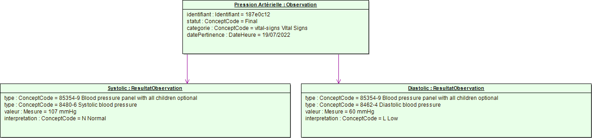
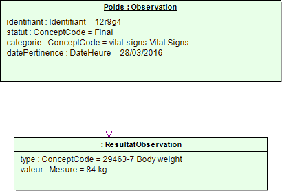

Table 163 Liste des parties du "Personne prise en charge"Liste des parties |
|---|
|
|
Cas d'usage : Mesurer la pression artérielle systolique et diastolique d'une personne

Figure 44 Diagramme d'objet - Pression artérielle
Cas d'usage : Mesurer le poids d'une personne.
Figure 45 Diagramme d'objet - Poids